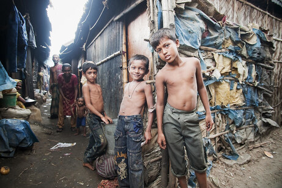

About Me
My name is Tanmoy Debnath. I am 18 years old and a student of Computer Science in University College Cork. I was born and raised in Tralee with my parents and two younger siblings. I attended primary school at Moyderwell Mercy Primary School and secondary school at Mercy Secondary School, Mounthawk.
My parents were born in Bangladesh which is in South Asia. Despite being born in Ireland and growing up with Irish culture, some part of me always brings me back to my roots. I have been to Bangladesh around 6 times and every time i've been there i've experienced something new or gained new insight into life. Bangladesh also happens to be the 6th most densely populated country in the world with a population of 164,700,00 (Source: World Bank).


In terms of future goals i'd like to be a software engineer and possibly move to the USA or Canada. Since I was a child it has always been my dream to move to the States. I believe that the movies and tv shows I watched as a kid may have played a big part as to why I want to move there.
Hobbies & Interests
Football
My Favourite Team: FC Barcelona
My father grew up supporting this team so that led me to support this club. One of the most influential and popular football clubs in the world, 'Barca' continues to gather fans and create 'magic' on the pitch. While my father grew up watching the likes of Maradona for me it was players such as Messi, Iniesta, Ronaldinho and more recently Suarez and Neymar that made me love this club. While nowadays Barcelona are struggling to win the league and having a poor track record in the 'Champions League' since 2015, this club still managed to create moments that have become special memories to me and I cannot appreciate this club enough.
| Players | Club(s) Played For | Career Goals | Career Assists |
| Lionel Messi | FC Barcelona (2003-2021)
Paris Saint-Germain (2021-present) |
769 | 355 |
| Cristiano Ronaldo | Sporting CP (2002-2003)
Manchester United (2003-2009) Real Madrid (2009-2019) Juventus (2019-2021) Manchester United (2021-present) |
801 | 272 |
| Luis Suarez | Ajax (2007-2011) Liverpool (2011-2014) FC Barcelona (2014-2020) Athletico Madrid (2020-present) |
495 | 276 |
| Neymar Jr | Santos (2009-2013)
FC Barcelona (2013-2017) Paris Saint-Germain (2017-present) |
335 | 218 |
| Serigo Aguero | Athletico Madrid (2006-2011)
Manchester City (2011-2021) FC Barcelona (2021-present) |
420 | 137 |
| Robert Lewandowski | Borussia Dortmund (2010-2014)
Bayern Munich (2014-present) |
558 | 157 |
| Sergio Ramos | Sevilla (2004-2005)
Real Madrid (2005-2021) Paris Saint-Germain (2021-present) |
129 | 48 |